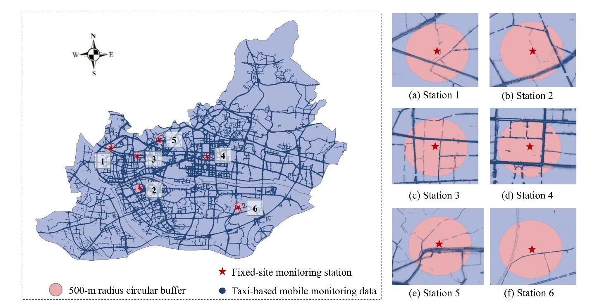
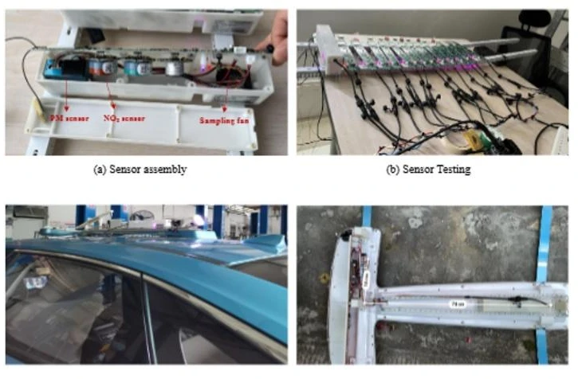
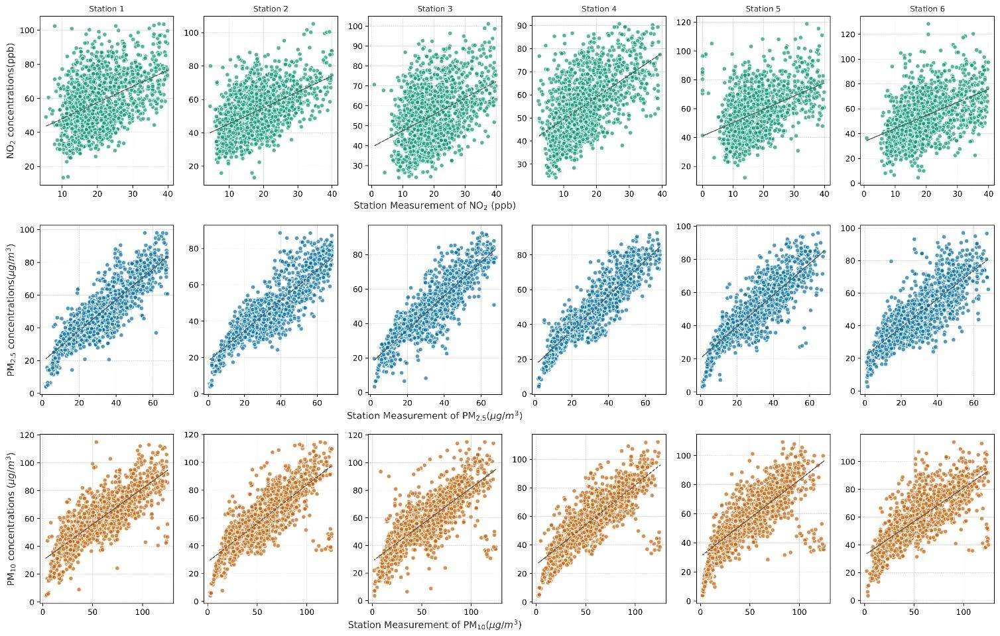
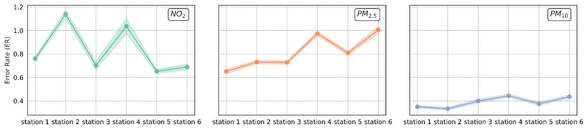
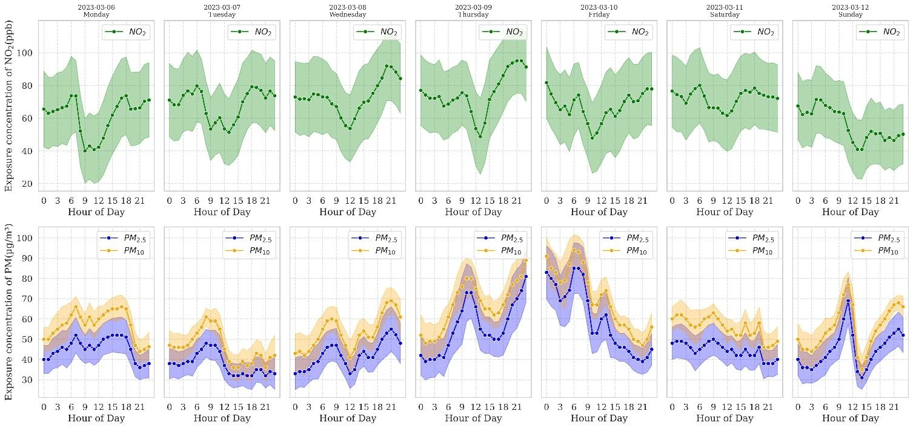
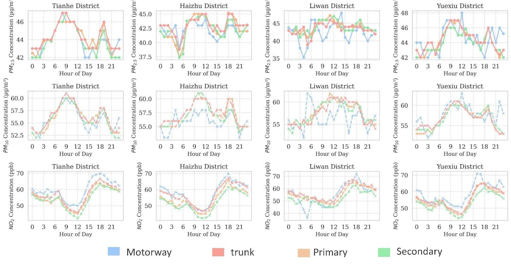
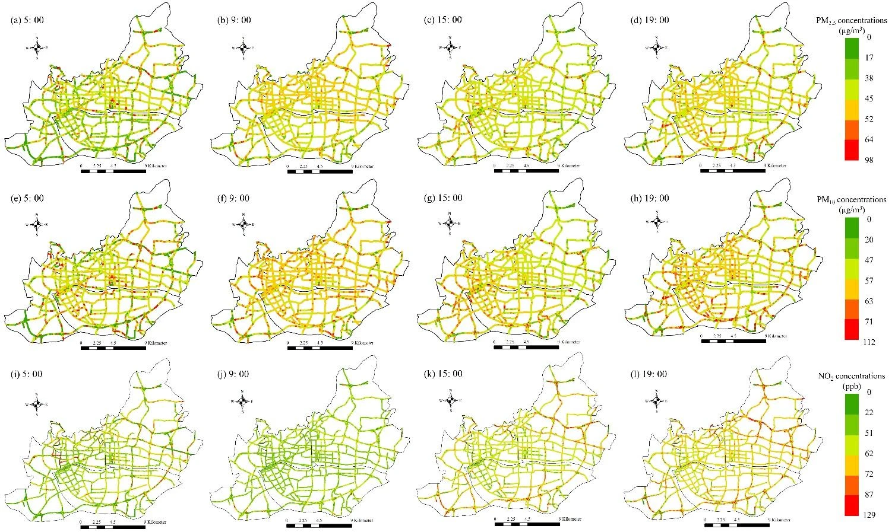
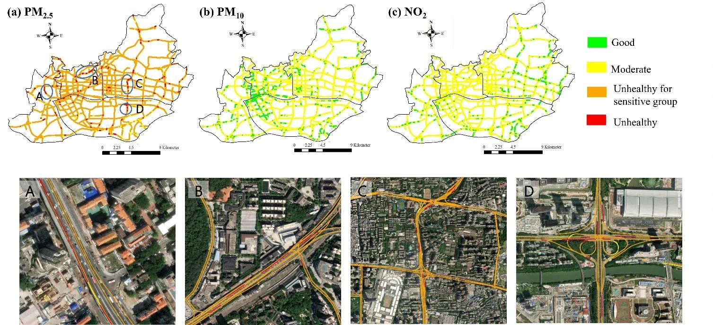

MOBILE SENSING · 2024
Mobile Air-Quality Mapping
High-resolution urban air pollution and thermal comfort mapping: an application of drive mobile sensing platform for smart city services
- aIntelligent Transportation Thrust, Systems Hub, The Hong Kong University of Science and Technology (Guangzhou), Guangzhou, China
- bGuangdong Provincial Key Lab of Integrated Communication, Sensing and Computation for Ubiquitous Internet of Things, Guangzhou, China
- cSchool of Intelligent Systems Engineering, Sun Yat-sen University, Guangzhou, 510006, China
- #Equal contribution
- *Corresponding author

OVERVIEW
On-road air pollution measured by 314 taxis and mapped at 50 m
Air pollutant concentrations vary over short distances in a city, and traffic microenvironments such as intersections, bus stops and roadsides can far exceed the ambient level around them. Fixed monitoring stations are sparse, costly to maintain and usually placed away from roads, so they capture on-road pollution poorly. This study equips 314 taxis in Guangzhou with sensors for NO2, PM2.5 and PM10, compares what they measure with six fixed stations, describes how on-road exposure changes over the day and the week, and labels local high-exposure hotspots.
-
01
A fleet of 314 taxis
Non-scheduled taxis operate 24 hours a day and often drive busy streets with intensive human activity, where concentrations tend to be elevated.
-
02
Three pollutants together
Each taxi records NO2, PM2.5 and PM10 with ambient temperature, humidity and GPS position: about 5 million records in two months.
-
03
50-m road segments
Records are reduced to an hourly median per 50-m segment. On average a segment was sampled on 59 days, yielding 448 data points.
-
04
Hotspot labels
Every segment gets an exposure level per pollutant; segments that are mostly at an unhealthy level are marked as hotspots.
METHOD
Roof-mounted sensors, hourly medians per segment, exposure levels
A sensor suite inside each taxi's roof-mounted lightbox measures ambient temperature, humidity, PM2.5, PM10 and NO2 together with GPS coordinates. From 1 February to 31 March 2023 the fleet collected about 5 million records in the central urban area of Guangzhou. Each record is assigned to a 50-m road segment, the records are condensed to hourly medians, and an identification algorithm turns the concentrations into exposure levels and hotspots.

-
Calibration
A Thermo 146i NOx analyzer calibrates the NO2 readings and validates the calibration curves. PM2.5 and PM10 are calibrated and validated against simultaneous roadside measurements from fixed stations.
-
Quality assurance
Sensors on three taxis were tested in parallel over 24 hours, with at least ten sampling groups per test; the relative deviation across devices stayed below 15%. Assembled systems ran for over 24 hours in an aging test.
-
Data reduction
Each GPS-tagged record is snapped to the nearest 50-m road segment, and each segment gets the median concentration per hour. Of about 26,052 segments, 62% have data on 50–60 distinct days and 86% have at least 12 hours of observations.
-
Hotspot identification
A sample counts when consecutive samples on a segment are less than 30 minutes apart, and a segment is used only if its valid monitoring time exceeds 10 days. A segment whose most frequent level is Unhealthy for Sensitive Groups or Unhealthy is a hotspot.
Instruments
The instruments comply with the Chinese standards for continuous automated ambient air quality monitoring systems.
Table 1 of the paper: parameters of the instruments carried by each taxi.
| Instrument | Measurement | Accuracy | Response time (s) | Resolution |
|---|---|---|---|---|
| ASAir AHT25 | Temperature | ±0.3 °C | < 5.0 | 0.01 °C |
| Humidity | ±2% | < 8.0 | 0.024% RH | |
| Alphasense NO2-B43F | NO2 | ±15% | < 80.0 | 0.1 ppb |
| Plantower PMS5003T | PM2.5, PM10 | Maximum of ±10% and ±10 μg/m3 | < 1.0 | 0.1 μg/m3 |
| GPS | Coordinates | ±10 m | – | 0.00001 |
RESULTS
Fixed stations against the road, daily rhythms and hotspots
Hourly measurements from six national fixed-site stations are compared with the mobile records inside a 500-m radius buffer around each station; the buffers hold from about 40,000 to 420,000 mobile records. Weather stayed stable over the observation period, with temperatures of 15 to 30 °C and relative humidity between 40% and 75%.
- Fleet
- 314 taxis
- About 5 million records from 1 February to 31 March 2023 in central Guangzhou.
- Spatial resolution
- 50 m
- One hourly median concentration per road segment, on about 26,052 segments.
- PM10 · station only
- ≥ 35%
- Least underestimate of on-road exposure when only the fixed station is used; for NO2 the error could exceed 100%. Section 3.1.
- PM2.5 · road network
- > 68%
- Share classified Unhealthy for Sensitive Groups or Unhealthy. Section 3.3.
By pollutant
On-road concentrations are consistently higher than those at the fixed stations. Particulate matter follows the stations' variation closely but differs in absolute value; NO2 correlates only moderately, which the paper attributes to localized traffic emissions.
Values the paper reports in the text of Sections 3.1 and 3.3 (plotted in its Figs. 2, 3 and 7), collected here by pollutant. R: correlation coefficient between hourly mobile and fixed-site measurements. ER: relative error of the fixed-site value against the mobile value.
| Pollutant | R | ER | Average on-road exposure | Exposure level of the road network |
|---|---|---|---|---|
| NO2 | 0.48 | 0.6–1.1 | 56.6 ppb | Most roads Good or Moderate |
| PM2.5 | 0.78 | 0.6–1.0 | 43.67 μg/m3 | Over 68% Unhealthy for Sensitive Groups or Unhealthy |
| PM10 | 0.88 | 0.35–0.45 | 56.76 μg/m3 | Most roads Good or Moderate |
ER = |Cm − Cf| / Cf, with Cm the mobile and Cf the fixed-site concentration; the paper gives it as the amount by which on-road levels exceed fixed-site levels. The PM2.5/PM10 ratio reaches 77%.
Fixed stations against the road
The paper checks the agreement with five metrics: fractional bias (FB), normalized mean square error (NMSE), geometric variance (VG), the correlation coefficient and the fraction of values within a factor of two (FAC2). PM2.5 and PM10 meet the thresholds −0.5 < FB < 0.5 and NMSE < 0.5, while NO2 shows higher values. In absolute terms, PM2.5 and NO2 have VG above 1.3 and FAC2 below 0.8; PM10 stays within the acceptable ranges. Within a 500-m buffer, relying on the fixed station alone would underestimate on-road exposure substantially.


Through the day and the week
Over a typical week NO2 repeats one daily course: it decreases through the morning, reaches a minimum around noon and rises through the afternoon, peaking around 18:00. The paper explains this with daytime photolysis of NO2 and its accumulation as solar radiation fades. PM2.5 and PM10 move together. Across road types they show two peaks, at 8:00–10:00 and 18:00–20:00, and within the week they peak between Thursday night and early Friday morning.


Where exposure is high
Concentration maps at fixed hours show high NO2 mainly along motorways and trunk roads in the afternoon. For particulate matter, peak periods fill the map with “red alert” zones that differ little from one another, which makes hotspots hard to pick out from concentrations alone.

The paper therefore sorts each segment into four exposure levels with the U.S. EPA air quality index thresholds below, and marks as hotspots the segments that are mostly Unhealthy for Sensitive Groups or Unhealthy. For NO2 and PM10, most roads in Guangzhou's central urban area are Good or Moderate. PM2.5 is the main concern: over 68% of the road network is Unhealthy for Sensitive Groups or Unhealthy. The hotspots include areas near schools, shopping malls, factories and overpasses.
Table S1 of the paper: pollutant exposure concentrations corresponding to each exposure risk level.
| Level | NO2 (ppb) | PM2.5 (μg/m3) | PM10 (μg/m3) |
|---|---|---|---|
| Good | 0–50 | 0–9.0 | 0–54 |
| Moderate | 51–100 | 9.1–35.4 | 55–154 |
| Unhealthy for Sensitive Groups | 101–150 | 35.5–55.4 | 155–254 |
| Unhealthy | 151–200 | 55.5–125.4 | 255–354 |

Scope
The results describe on-road conditions in the central urban area of Guangzhou over two months, 1 February to 31 March 2023. The comparison with fixed stations covers the roads within 500 m of six stations. Exposure levels follow the U.S. EPA thresholds in Table S1, and hotspots are identified only on segments with more than 10 days of valid monitoring time. Temperature and humidity are recorded alongside the pollutants and their daily course is in Fig. S4 of the paper; the results above are for the three air pollutants.
CITATION
@misc{zhong2024highresolution,
title={High-resolution urban air pollution and thermal comfort mapping: an application of drive mobile sensing platform for smart city services},
author={Hui Zhong and Hongliang Lu and Ting Gan and Yonghong Liu and Xinhu Zheng},
year={2024},
eprint={2412.17831},
archivePrefix={arXiv},
primaryClass={eess.SP},
url={https://arxiv.org/abs/2412.17831},
}